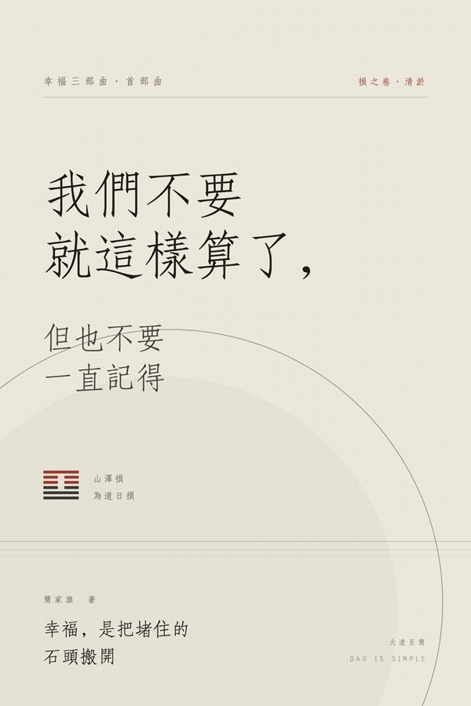
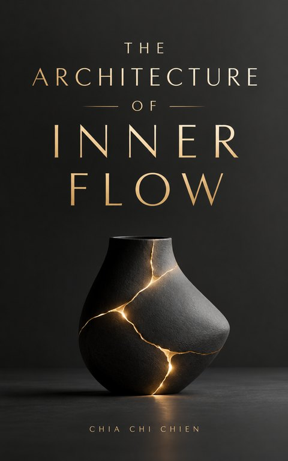
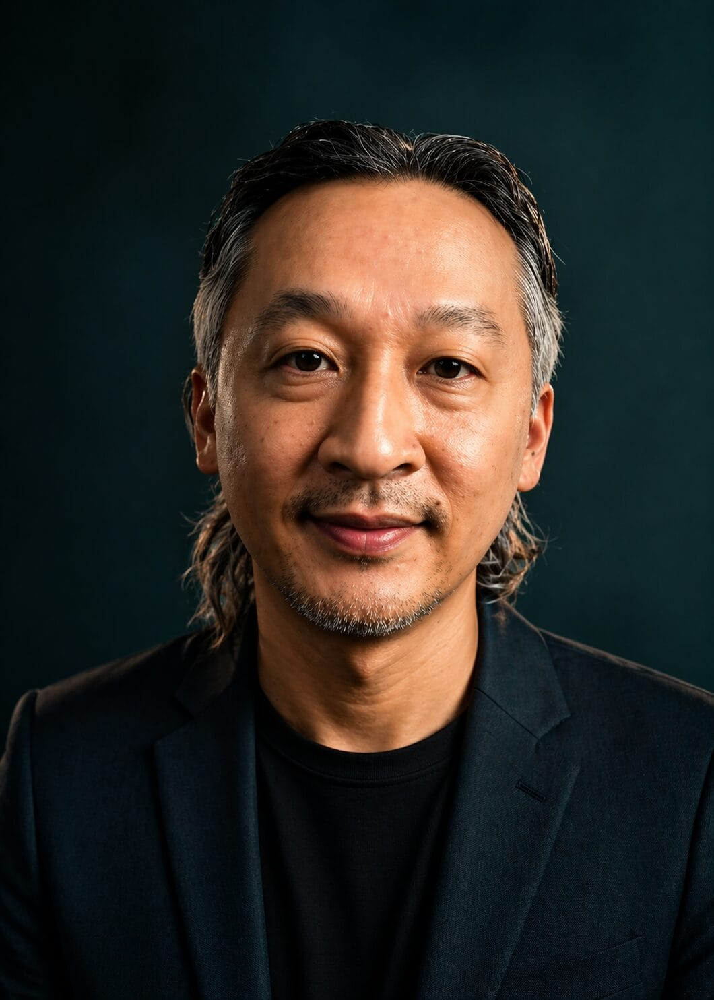

《我們不要就這樣算了，但也不要一直記得》
幸福三部曲・首部曲｜損之卷 · 清淤
語出《道德經》「為學日益，為道日損」。簡家旗十四年從金融投資轉身、走入泥土稻田與山林田野的心境清淤之作。面對生命與商業的繁冗執念，如何透過「日損」為心靈減熵，找回生命本來的安頓。
在 Kobo 閱讀 ↗Order through dissipative structures, sensory grounding, and digital leverage.
告別無效增熵，一人活成一支軍隊。
融合東方道家哲思、熱力學耗散結構理論與數位自動化槓桿，為創辦人與決策者重塑能量自足的開放秩序。
能量不滅，但秩序可以重構。當生命成為一個自足的開放系統，混亂便不再是損耗，而是躍遷的養分。
— 大道至簡 · 簡家旗
對象為 38–55 歲的創辦人、C-Level 高階主管與高淨值創作者。共同處境是能量持續逸散與事業瓶頸。我們用三個支點，建立自足秩序。
依循諾貝爾物理獎普里高津（Ilya Prigogine）的「耗散結構理論」：封閉系統必然走向最大混亂（熵增寂滅）。唯有主動打破邊界，與外界交換能量與物質，生命才能湧現高階秩序。我們協助您診斷組織與個人的能量漏損，引入結構性負熵流。
過度抽象的認知是現代決策者焦慮的根源。在台灣與雲南的山林深處，我們以地方文化工藝、高山古樹製茶、天然黑麥酸種發酵為媒介，讓雙手直接接觸溫度、泥土與時間。徹底為過載的大腦降噪，重新找回神經系統的穩定基底。
不追求臃腫的組織編制，而是利用全球數位資產出版（Amazon KDP / 專利體系）與現代 AI 自動化工作流作為阿基米德支點。讓個人的隱性智慧凝結為全球分發的數位資產，建立真正具備自我造血能力的一人商業閉環。
頁面只陳述現價，不揭露定價沿革。每一席次皆需經事前審核，確認雙方價值對齊後方始排期。
90 分鐘生命場域深度對話
3 天 2 夜感官定錨小班工坊
3 個月全週期親自深度陪跑
至少一年的長期陪伴
把幸福餐桌帶進你的品牌
本服務不是心理治療、醫療或財務規劃。
若您代表企業、集團創辦人或人資長（CHRO），尋求 10 人以內高階管理團隊的心理韌性、組織留才與真誠對話研修，可參閱我們的【幸福餐桌｜高階主管三階段課程】（南投產地長桌三天兩夜＋八週日常陪伴，附 SROI 社會投資回報評估報告）。
一人商業閉環的基石，是能夠獨立運轉、全球分發的知識產品線。以下為已正式出版之專著、國際電子書與研發中的思想體系。

幸福三部曲・首部曲｜損之卷 · 清淤
語出《道德經》「為學日益，為道日損」。簡家旗十四年從金融投資轉身、走入泥土稻田與山林田野的心境清淤之作。面對生命與商業的繁冗執念，如何透過「日損」為心靈減熵，找回生命本來的安頓。
在 Kobo 閱讀 ↗
Dissipative Structures & Personal Order
以諾貝爾物理獎普里高津「耗散結構理論」為骨架，專為在高壓環境中感覺能量持續逸散、面臨職業瓶頸與心智內耗的全球創業者與高管決策者而寫。闡述如何打破封閉自耗，構建自足開放系統。
在 Amazon 購買 ↗從物理負熵、感官接地到數位槓桿
三冊各對應一人商業閉環的核心支柱。逐步展開個人如何擺脫對龐大科層組織的依賴，成為一個自我更新、持續與世界交換能量的微型文明。現正於台灣與雲南雙基地深度研發中。
即將付梓 · 研發中
「大道至簡」不是隱逸的避世哲學，而是一門經過十四年風雨淘洗的硬核生存科學。
2012 年，我在台灣發起「稻田裡的餐桌」，在海邊、茶園、果樹下擺起長桌。那時我試圖回答一個問題：能不能做一件讓土地、農民、職人與消費者同時感到幸福的事？ 這場行動走過了兩岸三地兩百多個村落，驗證了幸福可以被設計成真實的商業價值。
然而，當規模擴張、繁複的人事與體制漸增，我親身經歷了系統的無情「熵增」——組織越龐大，內耗越劇烈，創辦人的生命力越被蠶食殆盡。
在長達數年的靜默與田野實踐中，我轉向了諾貝爾獎得主普里高津的耗散結構理論、斯多噶學派的內在主權治理，以及斯賓諾莎的實體哲學。我發現：一個人不需要千軍萬馬，才能成就不凡事業。當個人的能量系統回歸開放自足、感官扎根於大地、業務支點撬動現代數位槓桿，一人便是一支自給自足、抵禦混亂的軍隊。
這三階顧問服務，是我為少數準備好打破生命瓶頸的同路人，親手點亮的破局地圖。
耗散結構是比利時物理化學家伊利亞·普里高津提出的概念：一個遠離平衡態的開放系統，透過與外界不斷交換能量與物質，能夠在混亂中湧現出高度有序的新結構。人與組織都是典型的耗散系統。當你感到枯竭、倦怠或迷茫，往往是因為系統走向了封閉自耗。破局的本質不是更加努力，而是重塑你與外界的能量交換路徑。
深度感官定錨與哲學解構需要極致的安靜與專注。大班制的培訓往往淪為社交與形式，無法觸及個人核心的脆弱與瓶頸。每班 2 席，確保每一位參與者都能享有主理人完整的時間傾聽，並在手作酸種與茶山行走中，進行毫無保留的深度對話。
不需要。數位槓桿的重點在於「智慧資產化」與「系統架構思維」，而非敲打代碼。我們會協助您將數十年累積的行業洞察、處世哲學與隱性知識，透過結構化的數位發行（如 Amazon 國際版稅系統）與成熟的 AI 工作流進行轉化。技術由管線承擔，您只需專注於智慧的源頭。
審核主要考量三件事：一、您當前處境是否確實需要系統級的轉化；二、您對慢下來、扎根大地與自食其力的價值觀是否共鳴；三、主理人當季的專注度與時間配額。送出申請表無須繳費，僅在雙方確認通過審核並排定檔期後才進行付款。
Negentropy · Open System · Breakthrough